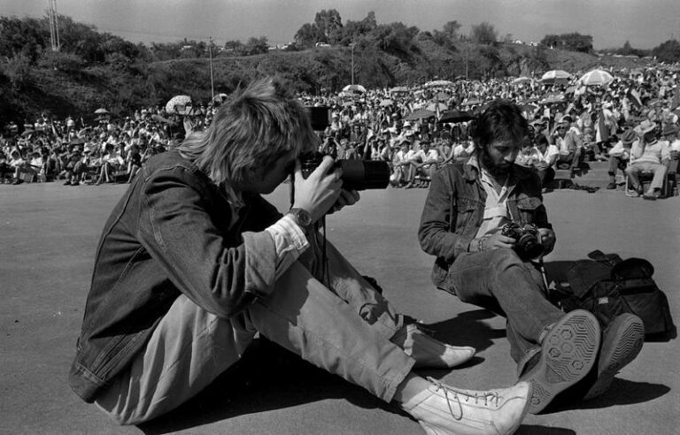

KEVIN CARTER (Joanesburgo, 13 de setembro de 1960 – Joanesburgo, 27 de julho de 1994) foi um premiado fotojornalista sul-africano e membro do Clube do Bangue-Bangue. Em 1994, Carter ganhou um Prémio Pulitzer por uma fotografia de sua autoria que retrata a fome no Sudão em 1993. Ele cometeu suicídio aos 33 anos de idade.
Sua história é retratada no longa-metragem de 2010 The Bang Bang Club, onde ele foi interpretado por Taylor Kitsch.
na China,
INICIO DA CARREIRA
Carter começou a trabalhar como fotojornalista esportivo nos fins de semana em 1983. Em 1984, ele mudou-se para trabalhar para o jornal Johannesburg Star, empenhado em expor a brutalidade do apartheid.
Carter foi o primeiro a fotografar uma execução pública necklacing (um tipo de execução e tortura praticada ao colocar
um pneu de borracha, cheio de gasolina, em torno do peito e dos braços da vítima, e depois atear fogo) de negros
africanos na África do Sul, por volta da década de 1980. A vítima era Maki Skosana,
que havia sido acusada de ter um relacionamento com um policial.[3] Carter, depois, falou sobre as fotografias: […] "Fiquei chocado com o que eles estavam fazendo, eu estava chocado com o que eu estava fazendo, mas, em seguida, as pessoas começaram a falar sobre as fotos […] então eu senti que talvez minhas ações não tinham sido de todo ruins. Ser testemunha de algo tão horrível não era necessariamente uma coisa ruim a se fazer".[4]
JUVENTUDE
Kevin Carter nasceu na África do Sul durante o período do apartheid e cresceu em um bairro de classe média exclusivo
para brancos. Quando criança, Carter ocasionalmente via batidas policiais para prender negros que viviam ilegalmente na área. Ele disse posteriormente que se questionou sobre os motivos de seus pais,
uma família católica e "liberal", serem tão "indiferentes" com a luta contra o regime do apartheid.[1]

Imagem: Kevin Carter